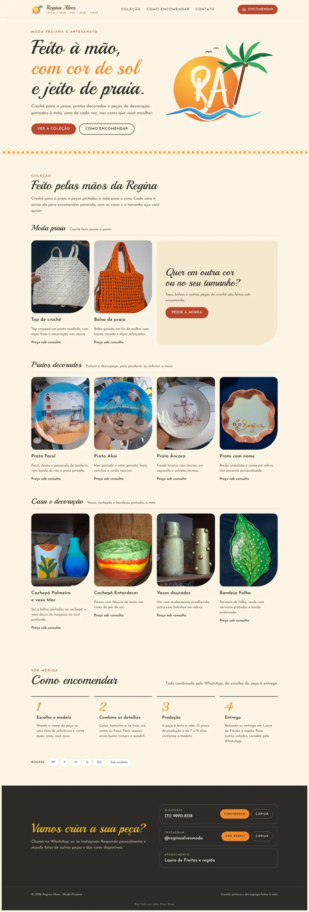

Cliente real
Regina Alves
Moda praia em crochê e artesanato, Lauro de Freitas
- O desafio
- A Regina vendia pelo Instagram e no boca a boca. Faltava um lugar para mostrar a coleção inteira e explicar, sem mil mensagens, como encomendar uma peça.
- O que eu fiz
- Identidade visual com logo, cores de sol e mar e tipografia própria. Um catálogo por categoria (moda praia, pratos, decoração), o passo a passo da encomenda e o pedido direto no WhatsApp dela.
- Identidade visual
- Catálogo
- Pedido pelo WhatsApp
